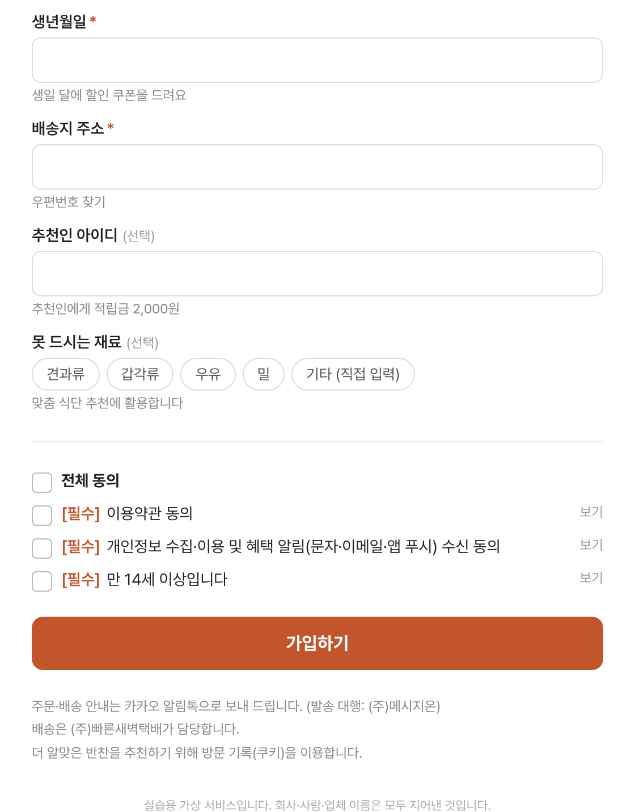
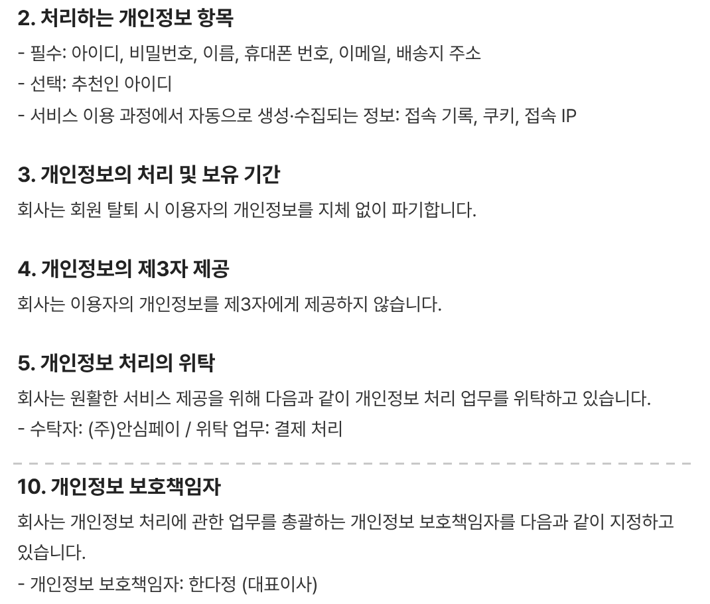
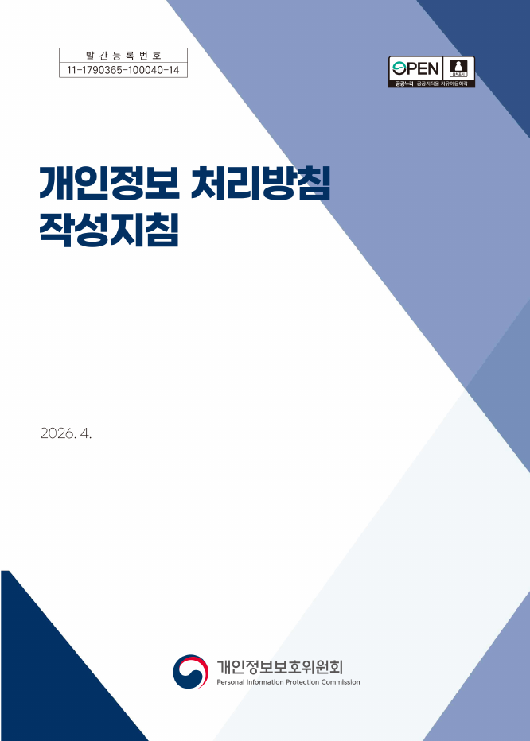
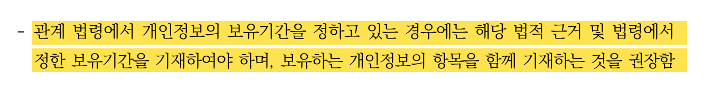

법률 전문가가 아닌 담당자가
AI로 개인정보 처리방침을 점검한다면?
내 소개
개인정보 처리방침 법무 검토는 매달 미리 신청해서 받았습니다
그래도 법이 바뀌거나, 인증 심사를 받거나, 새 서비스를 열 때면
갑자기 점검할 일이 생깁니다.
법률 전문가가 아닌 담당자는
어떻게 해야 할까요?
AX 강사과정 과제: 7·14·21시간 과정을 이렇게 설계했습니다
오늘 내용은 모두 직접 테스트하고, 검토받아 고친 결과입니다
블라인드 교차 검토
누가 만들었는지 가리고 외부 AI에게 구성안 채점을 맡겼습니다
→ 목표를 앞에 두고, AI 시연을 넣었습니다
조건마다 반복 테스트
같은 요청을 조건마다 다섯 번 넘게 돌렸습니다
→ 매번 같은 결과가 나온 것만 썼습니다
외부 AI 검수
다 만든 뒤 흐름과 표현을 점검받았습니다
→ 어색한 연결과 어려운 말을 고쳤습니다
(주)다정밥상은 다음 달 1일 온라인몰을 엽니다.
회사에 법을 아는 사람은 없습니다
오픈이 먼저입니다. 전문가 검토는 오픈 뒤에나 받을 수 있습니다.
개인정보 처리방침은 법이 정한 항목에 따라 작성해,
고객이 볼 수 있게 공개해야 하는 문서입니다
회원가입 화면과 처리방침에 고쳐야 할 곳을 여섯 군데 심어 두었습니다

회원가입 화면 (아래쪽)
개인정보 처리방침 (일부)두 문서를 비교하면, 세 곳은 눈으로도 보입니다
나머지 세 곳은 법을 알아야 보입니다. AI는 어디까지 찾을까요?
AI에게 점검표 없이, 두 문서만 주고 점검을 맡겼습니다
- 생년월일 수집 목적이 처리방침에 없음 제15조생년월일
- 생년월일이 처리방침 항목에 없음 제30조생년월일
- 알림톡 발송 대행사가 위탁 항목에 없음 제26조위탁 업체
- 배송 대행사가 처리방침에 없음 제26조위탁 업체
- 못 드시는 재료가 처리방침 항목에 없음 제30조재료
- 추천인 적립금과 제3자 제공 관계 확인 필요추가 질문
- 보유 기간이 "회원 탈퇴 시"로만 적혀 있음 제39조보관 기간 절반
- 혜택 알림을 문자·이메일·앱 푸시별로 나눠야 하는지 제15조추가 질문
두 문서를 비교해서 알 수 있는 세 곳만 찾았습니다
AI 답 여덟 줄을 나눠 보면: 찾은 곳 3곳 (1·2번 생년월일, 3·4번 위탁 업체, 5번 재료) · 절반 1곳 (7번 보관 기간) · 추가 질문 2개 (6·8번)
AI는 두 문서를 서로 비교했습니다.
하지만 법이 요구하는 것까지 빠짐없이 확인할 점검표는 없었습니다
환각은 틀린 것, 누락은 빠진 것
환각
없는 것을 있는 것처럼 말합니다.
→ 제39조는 손해배상 조항
답에 적혀 있으니, 조문을 찾아보면 틀린 걸 알 수 있습니다.
누락
있어야 할 것을 말하지 않습니다.
AI 답에는 그 말이 없음
답에 나타나지 않으니, 빠진 줄 알기 어렵습니다.
누락을 막으려면, AI에게도 업무 가이드를 줘야 합니다.
점검하는 일의 업무 가이드 = 점검표
처음 해 보는 일이라 검색부터 했더니,
글마다 근거로 드는 원본이 있었습니다
개인정보 처리방침 템플릿, 그대로 쓰세요
남이 만든 틀
개인정보 처리방침
다른 쇼핑몰 것
개정된 처리방침, 이렇게 쓰세요
근거: 「개인정보 처리방침 작성지침」같은 근거
처리방침에 꼭 들어가야 할 항목
근거: 「개인정보 처리방침 작성지침」같은 근거

원본을 받습니다
개인정보보호위원회「개인정보 처리방침 작성지침」
법을 잘 몰라도, 「개인정보 처리방침 작성지침」으로
점검표 초안은 만들 수 있습니다
공식 자료로 초안을 받습니다
「개인정보 처리방침 작성지침」으로, 근거 쪽 번호까지
원문을 펴서 확인합니다
쪽 번호를 따라가 고치고, 빠진 것은 더합니다
판단은 전문가에게 맡깁니다
점검표는 어디까지나 초안입니다
AI가 알려 준 31쪽을 직접 펴 보니,
보관 기간 내용을 고쳐야 했습니다
보관 기간을 구체적으로 적었는지 확인하라고 하면서
근거로 작성지침 31쪽을 달았습니다다른 법이 보관 기간을 정하고 있으면, 그 근거와 기간도 적어야 합니다
예: 전자상거래법에 따른 계약 기록 5년처리방침에는 "회원 탈퇴 시 지체 없이 파기"만 있습니다. 온라인으로 팔면 주문·계약 기록을 5년 보관해야 합니다
"탈퇴 후에도 법에 따라 보관해야 하는 기록이 있다면, 그 근거와 기간을 적었는가"


점검 범위와 맞춰 보니 동의를 확인하는 내용이 없어서,
한 줄을 더했습니다
AI 초안 10줄에서 한 줄은 고치고 한 줄은 더해 점검표 11줄
점검표를 주고, 고치고, 더할 때마다
찾는 곳이 늘었습니다
다섯 번 모두 찾은 곳만 셌습니다 (△ 절반은 세지 않았습니다)
AI는 그대로입니다. 사람이 점검표를 고치고 더했습니다.
적혀 있는 것은 오픈 전에 고치고,
판단이 필요한 것은 전문가에게 묻습니다
여섯 곳은 오픈 전에 고칩니다 법과 지침에 적혀 있는 것 · 실제 사실을 확인하고 담당자가
전문가에게 묻습니다 우리 상황에 맞는지 판단이 필요한 것 · 오픈 뒤 검토
다정밥상은 여섯 곳을 고쳐 오픈하고, 전문가 답을 받을 때까지 재료 칸은 잠시 내립니다.
재료는 선택 항목이라 가입과 주문에는 지장이 없습니다. 최종 판단은 전문가와 대표가 합니다.
AI에게 일을 맡길 때도,
사람에게 맡길 때처럼 세 가지가 필요합니다
오늘 쓴 것은 모두 여러분이 해 오던 업무 스킬입니다
가이드를 주는 사람이 AI의 방향을 잡습니다.